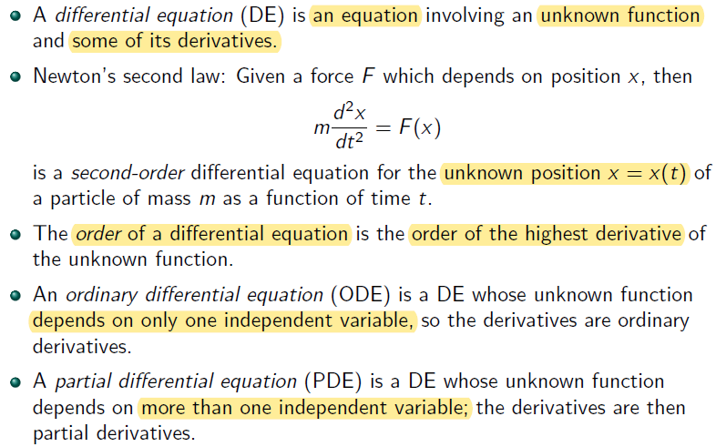
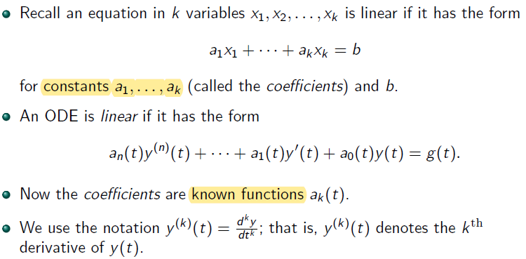
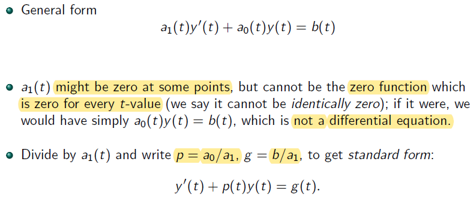
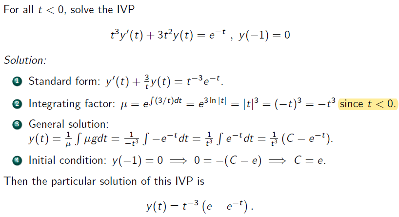

Differential Equations

In Newton's second law
- t is independent variable
- x is dependent variable
Difference between ODE and PDE:
- ODE's unknown function depends on only one independent varibale while the one of PDE depends on more than one independent varibale
Example of PDE and partial derivatives
- unknown function f(x,y) has two independent variable x and y
- partial derivative
- first order - ∂x∂f and ∂y∂f
- second order - ∂x2∂2f, ∂y2∂2f and ∂x∂y∂2f
Linear DEs

Solutions of DEs and Initial Value Problems

General Solution has to include all solution of given DE
Initial condition and boundary condition are called side conditions
Rule of Thumb:
- the order of a DE = number of side conditions of DE
Examples of IVP and BVP
- IVP - given value at same t where t=0
⎩⎪⎨⎪⎧2x′′=x(t)x(0)=1x′(0)=2
- BVP - given value at different t
⎩⎪⎨⎪⎧2x′′=x(t)x(0)=1x(1)=2
The Simplest DEs: Antiderivatives
Another way to write the general solution using a definite integral, where y(t0) is same as C
y(t)−y(t0)=∫t0tg(s)ds
And y(t0)=y0 is a given inital condition
Example

First-order linear ODEs

The integrating factor method
Side Note:
μ=e∫p(t)dt
μ(y′(t)+p(t)y(t)=μg(t)
μy′(t)+μp(t)y(t)=μg(t)
Taking derivate of integral of a function equals to the function itself
∵μ′=dtde∫p(t)dt=p(t)e∫p(t)dt
∴μy′(t)+μ′y(t)=μg(t)
by mupltiplication
dtd(μ(t)y(t))=μg(t)
take definite integral of both side
μ(t)y(t)−μ(t0)y(t0)=∫tt0μ(s)g(s)ds
Recall :
- the integral of the derviative of a function equal to function itself (remember inital conditions / value or constant C)
Side Note:
- μ(t0)y(t) is merged with constant number C from integral ∫tt0μ(s)g(s)ds
- if an I.C is given, e.g y(t0)=y0← value
Summary of Integrating Factor Method
Example
Example 1
Solution:
- t→ ind. var.; v→ dep. var., depend on t
- unknown → v or v(t)
- constant: m,g,b
evaluate integrating factor:
- u - subtitution
- u=mbt
- du=mbdt
- dt=dubm
Example 2
